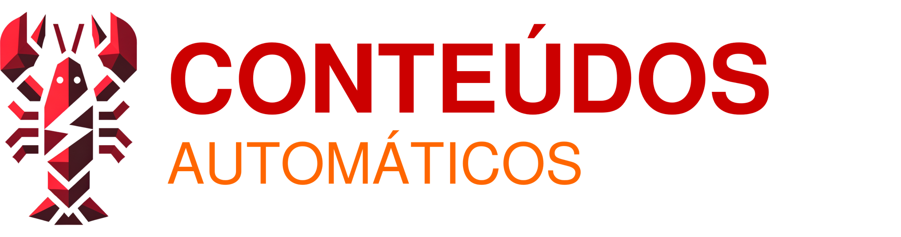

Pré-lançamentoUma implementação OpenClaw completa: 3 agentes de IA que pesquisam, criam e publicam conteúdo pela sua marca no Instagram, LinkedIn, YouTube, TikTok, X, Threads, Facebook, Substack e Blog. Automático. 24/7.
O OpenClaw é uma plataforma open-source que cria agentes de IA autônomos. Não chatbots. Agentes que executam tarefas reais, tomam decisões e operam 24 horas por dia.
Empresas e profissionais do mundo inteiro já usam OpenClaw pra automatizar operações, conteúdo, atendimento e muito mais.
O Conteúdos Automáticos é uma implementação pronta do OpenClaw, focada em um único objetivo: produzir e publicar conteúdo nas suas redes sociais, todo dia, sem você precisar fazer nada.
Você não precisa entender de tecnologia. Você não precisa saber o que é um agente de IA. Você só precisa do resultado: conteúdo publicado, todo dia, em 9 plataformas.
Você é empresário. Tem clientes pra atender, equipe pra liderar, decisões pra tomar.
Mas todo mundo diz que você precisa postar conteúdo. Todo dia. Em várias plataformas.
Contratar um social media por R$ 2.000 a R$ 5.000/mês. E ainda precisa revisar tudo.
Fazer você mesmo. Gasta 2 a 3 horas por dia que você não tem.
Usar o ChatGPT. Copia, cola, formata, agenda... no terceiro dia já desistiu.
Postar quando dá. Uma vez por semana, sem consistência, sem resultado.
E enquanto isso? Seus concorrentes postam todo dia. Em todas as plataformas. A marca deles cresce. A sua fica invisível.
Não é falta de vontade. É falta de um sistema que funcione sem depender de você.
O Conteúdos Automáticos é uma implementação OpenClaw com 3 agentes de IA especializados. Eles pesquisam, criam e publicam conteúdo por você. Automaticamente.
Não é um chatbot. São agentes que trabalham sozinhos, 24 horas por dia.
Busca tendências, analisa concorrentes e seleciona os melhores temas para o seu nicho — todos os dias, automaticamente.
Cria posts, legendas, carrosséis e roteiros no tom da sua marca — adaptados para cada plataforma.
Agenda e publica nas 9 plataformas no melhor horário de cada rede. Você não precisa abrir nenhum app.
Um painel onde você vê tudo: o que foi publicado, o que está agendado, o que está em produção. Aprove ou ajuste qualquer conteúdo antes de ir ao ar. Controle total, num lugar só.
O agente pesquisador analisa seu nicho, seus concorrentes e as tendências do momento. Entrega ideias de conteúdo relevantes todo dia.
O agente produtor transforma essas ideias em conteúdos prontos. Posts, legendas, roteiros. Tudo no tom da sua marca.
O agente de publicação distribui em todas as plataformas, no melhor horário. Você acompanha tudo pelo Mission Control.
Tempo total de envolvimento seu: aprovar os conteúdos. Só isso.
"Enquanto você foca no seu negócio, seus conteúdos estão sendo publicados em 9 plataformas diferentes. Todo dia. Automaticamente."
O passo a passo completo pra você configurar sua implementação OpenClaw.
Pra quem: quer meter a mão na massa e economizar.
Começar agora por R$ 27,90Eu configuro toda a sua implementação OpenClaw. Remotamente. Você só usa.
Pra quem: quer tudo pronto, sem se preocupar com a parte técnica.
Após a compra: você recebe um link de WhatsApp pra iniciar imediatamente.
Quero tudo pronto por R$ 97,90É empresário e sabe que precisa produzir conteúdo, mas não tem tempo
Já tentou postar com consistência e não conseguiu manter
Não quer (ou não pode) pagar R$ 3.000+/mês num social media
Quer estar presente em 9 plataformas sem multiplicar o trabalho
Busca uma solução que funcione sozinha, não mais uma ferramenta pra operar
Quer um curso teórico sobre inteligência artificial
Espera resultados sem dedicar nem 1 hora de setup (Plano 1)
Precisa de edição profissional de vídeos (os agentes criam roteiros, não editam vídeo)
Plano 1 (Faça Você Mesmo): Acesso ao guia em vídeo com o passo a passo completo, os 3 agentes de IA prontos pra copiar e usar (Pesquisador, Produtor e Publicação), o Mission Control configurado, templates de tom de voz e personalidade da marca, configuração das 9 plataformas e acesso ao grupo exclusivo de suporte.
Plano 2 (Implementação Completa): Tudo do Plano 1, mais a implementação remota personalizada pro seu negócio, tom de voz calibrado com a sua marca, agentes testados e validados, sessão de entrega com orientação e conteúdo já saindo em até 48h.
A não ser que você coloque agentes OpenClaw pra trabalhar agora.
Enquanto você lê isso, seus concorrentes estão postando. Todo dia. Em todas as plataformas.
Com o Conteúdos Automáticos, você configura seus agentes OpenClaw uma vez e eles trabalham por você. Todo dia. Em 9 plataformas. Sem parar.